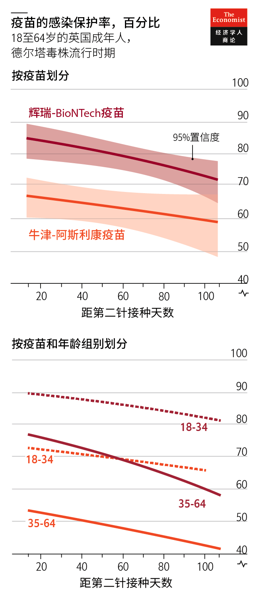
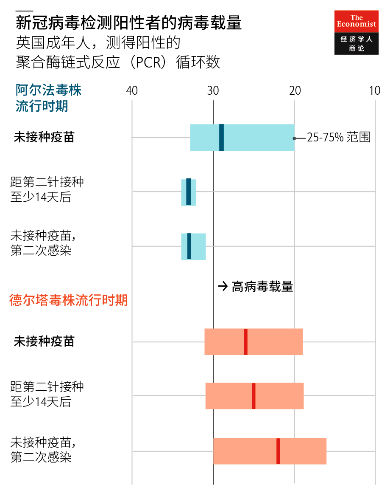
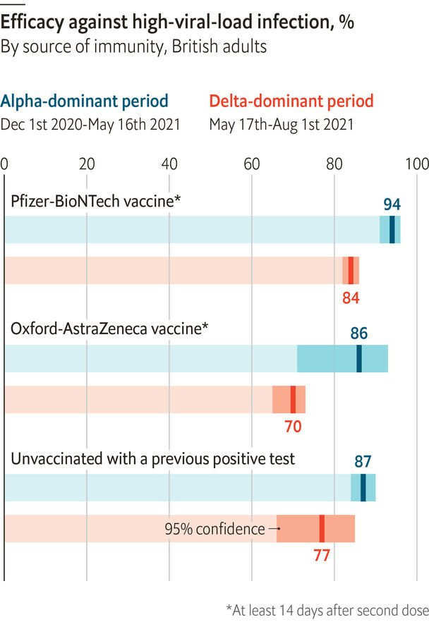
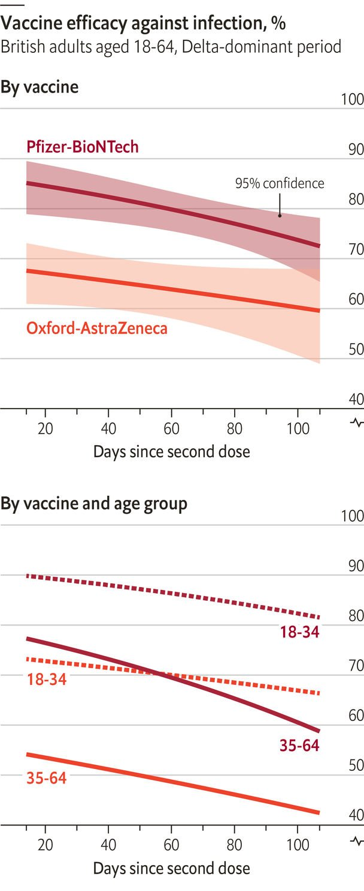
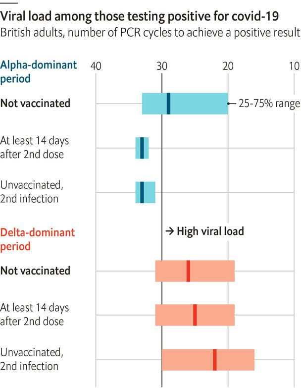

2021-08-28T08:34:49+00:00
德尔塔变数
疫苗大多能抗德尔塔，但突破病例强传染
英国一项新研究还发现免疫力会逐渐减弱

八月十八日，美国医事总署署长宣布向完成第二针疫苗接种超过八个月的人提供加强针。以色列许多公民已注射第三针。法国和英国也在考虑提供加强针。
新冠疫苗预防重症及死亡的效果好于预防病毒传播。然而，它们在防感染上的保护力可能已开始减弱。在冰岛和以色列，大多数成年人几个月前就已接种疫苗，但当地感染病例正在飙升。
对于这一趋势，主要有两种解释。一是德尔塔变异毒株能突破疫苗保护。另一个是疫苗的保护力随时间推移而下降。一篇新论文为这两者都找到了佐证。
8月19日公布的这项研究由牛津大学的科恩·鲍威尔斯（Koen Pouwels）主持，使用了对英国定期接受新冠病毒检测的50万人的调查数据。按年龄和距完成接种的时间做调整后，研究人员比较了两个时期的疫苗接种效果：一个是阿尔法变异毒株流行的时期，另一个是德尔塔毒株流行的时期。在高病毒载量的情况下，辉瑞疫苗对抗阿尔法毒株的保护率为94%，对抗德尔塔毒株下降到84%。阿斯利康疫苗的保护率从86%降至70%。因之前曾感染病毒所获的免疫力保护从87%降至77%。
时间的流逝加强了这种免疫逃逸。以色列的一项研究表明，在1、2月间接种辉瑞疫苗的人比在3、4月间接种的更可能在6、7月间出现“突破性”感染，几率高出50%。英国的数据为这一结果提供了佐证：接种第二针三个月后，辉瑞疫苗的效力下降了十个百分点。阿斯利康疫苗的降幅较小，但整体保护率更低。
该研究最瞩目的发现是在病毒感染方面。在阿尔法毒株流行时期，已接种的突破性病例的病毒载量不高。他们传播病毒的可能性也就较低。相比之下，德尔塔毒株突破性病例的病毒载量与首次感染新冠病毒的未接种人群一样高。
这篇英国论文没有研究新冠病例的病情严重程度。理论上，感染保护力减弱不会影响对重症的保护力，因为经过疫苗训练的免疫系统可以迅速驱逐病毒。然而，在以色列，住院人数已回升至3月时的水平。是否需要广泛注射加强针以保障医院床位资源，目前还没有定论。
2021-08-28T08:34:49+00:00
The Delta delta
Jabs mostly fend off the Delta strain but breakthroughs are infectious
A new British study also finds that immunity wanes over time
ON AUGUST 18TH America’s surgeon general announced that people who got covid-19 vaccines at least eight months ago can receive an extra shot. Israel has already given a third jab to many citizens. France and Britain are also considering boosters.
Covid-19 vaccines offer better defences against hospitalisation and death than versus transmission. However, their protection against infection may have begun to wane. In Iceland and Israel, most adults got jabs months ago, but cases are soaring.
There are two leading explanations for this trend. One is that the Delta variant escapes protection from vaccines. Another is that the jabs’ efficacy declines over time. A new paper finds evidence for both causes.
Led by Koen Pouwels of Oxford, the study, released on August 19th, uses a survey of 500,000 people in Britain who were tested regularly for covid-19. After adjusting for age and time since vaccination, it compared the jabs’ efficacy during two time periods: one dominated by the Alpha variant, and another by Delta. For cases with a high viral load, the efficacy of Pfizer’s jab fell from 94% against Alpha to 84% versus Delta. AstraZeneca’s efficacy dipped from 86% to 70%, and protection resulting from previous infection declined from 87% to 77%.
The passage of time has reinforced this immune escape. One Israeli study showed that people who got Pfizer’s jab in January or February were 50% more likely to have a “breakthrough” case in June or July than were those vaccinated in March or April. The British data back up this result: in the three months following a second jab, Pfizer’s efficacy declined by ten percentage points. AstraZeneca’s vaccine had a milder drop, though it was less protective overall.
The study’s most striking finding involved transmission. In the Alpha period, vaccinated people with breakthrough cases produced only small amounts of virus. This made them less likely to spread it. In contrast, viral loads in breakthrough Delta cases were just as high as those of people exposed to viral proteins for the first time.
The British paper does not study the severity of covid-19 cases. In theory, protection against infection can wane without harming defences against serious disease, because a vaccine-trained immune system can expel the virus quickly. However, hospitalisations in Israel have risen to levels last seen in March. The jury is still out on whether widespread boosters will be necessary to keep hospital beds open.■
2021-08-28T08:34:49+00:00
德爾塔變數
疫苗大多能抗德爾塔，但突破病例強傳染
英國一項新研究還發現免疫力會逐漸減弱
八月十八日，美國醫事總署署長宣布向完成第二針疫苗接種超過八個月的人提供加強針。以色列許多公民已注射第三針。法國和英國也在考慮提供加強針。
新冠疫苗預防重症及死亡的效果好於預防病毒傳播。然而，它們在防感染上的保護力可能已開始減弱。在冰島和以色列，大多數成年人幾個月前就已接種疫苗，但當地感染病例正在飆升。
對於這一趨勢，主要有兩種解釋。一是德爾塔變異毒株能突破疫苗保護。另一個是疫苗的保護力隨時間推移而下降。一篇新論文為這兩者都找到了佐證。
8月19日公布的這項研究由牛津大學的科恩·鮑威爾斯（Koen Pouwels）主持，使用了對英國定期接受新冠病毒檢測的50萬人的調查數據。按年齡和距完成接種的時間做調整後，研究人員比較了兩個時期的疫苗接種效果：一個是阿爾法變異毒株流行的時期，另一個是德爾塔毒株流行的時期。在高病毒載量的情況下，輝瑞疫苗對抗阿爾法毒株的保護率為94%，對抗德爾塔毒株下降到84%。阿斯利康疫苗的保護率從86%降至70%。因之前曾感染病毒所獲的免疫力保護從87%降至77%。
時間的流逝加強了這種免疫逃逸。以色列的一項研究表明，在1、2月間接種輝瑞疫苗的人比在3、4月間接種的更可能在6、7月間出現“突破性”感染，幾率高出50%。英國的數據為這一結果提供了佐證：接種第二針三個月後，輝瑞疫苗的效力下降了十個百分點。阿斯利康疫苗的降幅較小，但整體保護率更低。
該研究最矚目的發現是在病毒感染方面。在阿爾法毒株流行時期，已接種的突破性病例的病毒載量不高。他們傳播病毒的可能性也就較低。相比之下，德爾塔毒株突破性病例的病毒載量與首次感染新冠病毒的未接種人群一樣高。
這篇英國論文沒有研究新冠病例的病情嚴重程度。理論上，感染保護力減弱不會影響對重症的保護力，因為經過疫苗訓練的免疫系統可以迅速驅逐病毒。然而，在以色列，住院人數已回升至3月時的水平。是否需要廣泛注射加強針以保障醫院床位資源，目前還沒有定論。